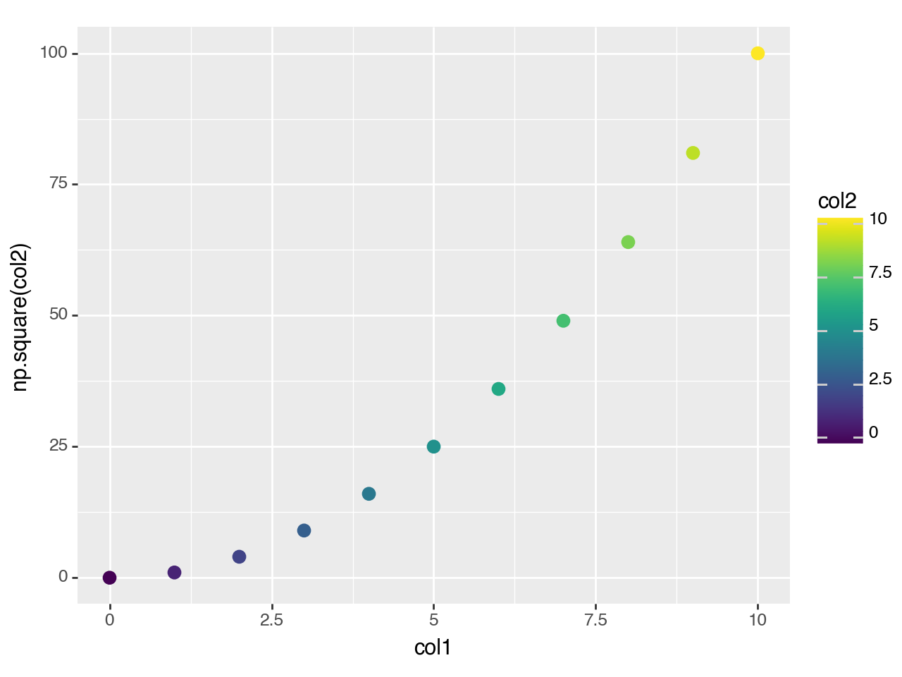

import pandas as pd
import numpy as np
from plotnine import (
ggplot,
aes,
geom_point
)aes
mapping.aes(self, *args, **kwargs)
Create aesthetic mappings
Parameters
| Name | Type | Description | Default |
|---|---|---|---|
x
|
expression | array_like | scalar | x aesthetic mapping | required |
y
|
expression | array_like | scalar | y aesthetic mapping | required |
**kwargs
|
dict | Other aesthetic mappings |
{}
|
Notes
Only the x and y aesthetic mappings can be specified as positional arguments. All the rest must be keyword arguments.
The value of each mapping must be one of:
string::
import pandas as pd import numpy as np arr = [11, 12, 13] df = pd.DataFrame({'alpha': [1, 2, 3], 'beta': [1, 2, 3], 'gam ma': [1, 2, 3]}) # Refer to a column in a dataframe ggplot(df, aes(x='alpha', y='beta'))array_like::
# A variable ggplot(df, aes(x='alpha', y=arr)) # or an inplace list ggplot(df, aes(x='alpha', y=[4, 5, 6]))scalar::
# A scalar value/variable ggplot(df, aes(x='alpha', y=4)) # The above statement is equivalent to ggplot(df, aes(x='alpha', y=[4, 4, 4]))String expression::
ggplot(df, aes(x='alpha', y='2*beta')) ggplot(df, aes(x='alpha', y='np.sin(beta)')) ggplot(df, aes(x='df.index', y='beta')) # If `count` is an aesthetic calculated by a stat ggplot(df, aes(x='alpha', y=after_stat('count'))) ggplot(df, aes(x='alpha', y=after_stat('count/np.max(count)')))The strings in the expression can refer to;
- columns in the dataframe
- variables in the namespace
- aesthetic values (columns) calculated by the
stat
with the column names having precedence over the variables. For expressions, columns in the dataframe that are mapped to must have names that would be valid python variable names.
This is okay::
# ‘gam ma’ is a column in the dataframe ggplot(df, aes(x=‘df.index’, y=‘gam ma’))
While this is not::
# ‘gam ma’ is a column in the dataframe, but not # valid python variable name ggplot(df, aes(x=‘df.index’, y=‘np.sin(gam ma)’))
aes has 2 internal methods you can use to transform variables being mapped.
1. ``factor`` - This function turns the variable into a factor.
It is just an alias to ``pd.Categorical``::
ggplot(mtcars, aes(x='factor(cyl)')) + geom_bar()
2. ``reorder`` - This function changes the order of first variable
based on values of the second variable::
df = pd.DataFrame({
'x': ['b', 'd', 'c', 'a'],
'y': [1, 2, 3, 4]
})
ggplot(df, aes('reorder(x, y)', 'y')) + geom_col().. rubric:: The group aesthetic
group is a special aesthetic that the user can map to. It is used to group the plotted items. If not specified, it is automatically computed and in most cases the computed groups are sufficient. However, there may be cases were it is handy to map to it.
See Also
after_stat: For how to map aesthetics to variable calculated
by the statafter_scale: For how to alter aesthetics after the data has been
mapped by the scale.stage: For how to map to evaluate the mapping to aesthetics at
more than one stage of the plot building pipeline.
Examples
aes
Mapping variables to the visual properties of a plot.
df = pd.DataFrame({
'col1': np.arange(11),
'col2': np.arange(11)
})
(ggplot(df, aes(x='col1', y='col2'))
+ geom_point()
)
<Figure Size: (640 x 480)>(ggplot(df, aes(x='col1', y='col2 ** 2'))
+ geom_point()
)
<Figure Size: (640 x 480)>(ggplot(df, aes(x='col1', y='np.square(col2)'))
+ geom_point()
)
<Figure Size: (640 x 480)>The first two positional arguments are x and y aesthetics. Any other aesthetic must be mapped with a keyword argument.
(ggplot(df, aes('col1', 'np.square(col2)', color='col2'))
+ geom_point(size=3)
)
<Figure Size: (640 x 480)>